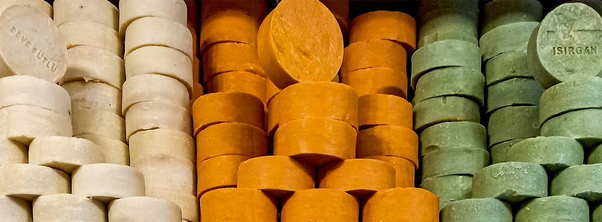

Mission Statement
I modsætning til konventionelle produkter, der kan udtørre huden, indeholder organiske sæber oftest naturlige ingredienser som sheasmør og kokosolie.
Miljø og kvalitet prioriteres højt i BioVerse, og vore organiske sæber bevarer hudens naturlige fugtbalance. Disse sæber er typisk fremstillet af planteolier, æteriske olier og naturlige ekstrakter.
Ved at vælge organiske sæber fra BioVerse investerer man ikke kun i sin egen hudpleje, men også i en grønnere fremtid for alle.